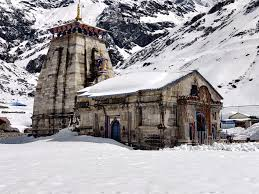
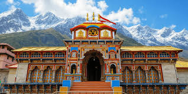
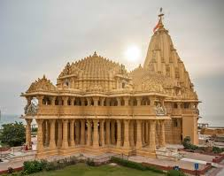
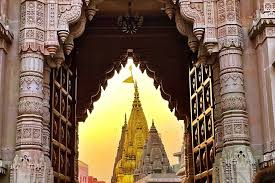
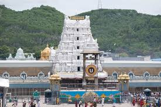
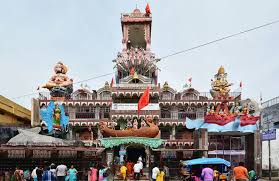
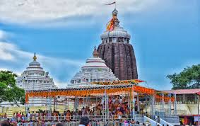
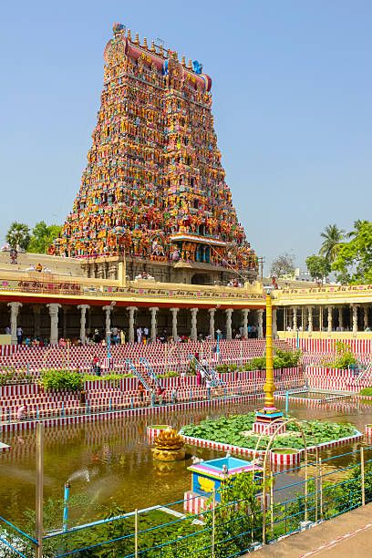
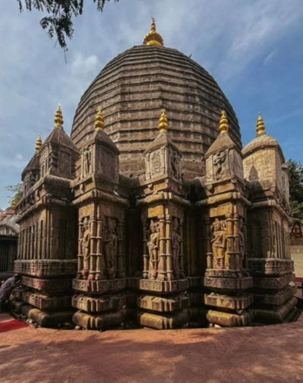

Kedarnath Temple
Kedarnath is one of the twelve Jyotirlinga shrines dedicated to Lord Shiva. It is located in the Garhwal region of Uttarakhand, India, at an altitude of about 3,583 meters (11,755 feet). The temple is known for its breathtaking location amidst snow-capped mountains and is a popular destination for pilgrims seeking spiritual enlightenment.

Badrinath Temple
Badrinath is one of the four Char Dham pilgrimage sites in India and is dedicated to Lord Vishnu. It is located in the Chamoli district of Uttarakhand, India, at an altitude of about 3,133 meters (10,279 feet). The temple is known for its serene location in the Himalayas and is a popular destination for pilgrims seeking spiritual enlightenment.

Somnath Temple
Somnath is one of the twelve Jyotirlinga shrines dedicated to Lord Shiva. It is located in the Gujarat state of India, on the coast of the Arabian Sea. The temple is known for its rich history and spiritual significance, and is a popular destination for pilgrims seeking spiritual enlightenment.

Kashi Vishwanath Temple
Kashi Vishwanath Temple is a Hindu temple dedicated to Lord Shiva, located in Varanasi, Uttar Pradesh, India. It is one of the twelve Jyotirlinga shrines and is considered one of the most sacred places for Hindus. The temple is known for its intricate architecture and spiritual significance.

Tirupati Temple
Tirumala Venkateswara Temple is a Hindu temple dedicated to Lord Venkateswara, a form of Lord Vishnu. It is located in the state of Andhra Pradesh, India, and is one of the most visited and wealthiest temples in the world. The temple is known for its spiritual significance and the annual Balaji Yatra.

Vaishno Devi Temple
Vaishno Devi Temple is a Hindu temple dedicated to the goddess Vaishno Devi, a form of the Divine Mother. It is located in the state of Jammu and Kashmir, India, and is one of the most visited pilgrimage sites for devotees. The temple is known for its spiritual significance and the annual Yatra.

Puri Jagannath Temple
Puri Jagannath Temple is a Hindu temple dedicated to Lord Jagannath, a form of Lord Vishnu. It is located in the state of Odisha, India, and is one of the four Char Dham pilgrimage sites. The temple is known for its beautiful architecture and the annual Rath Yatra festival.

Mahakaleshwar Temple
Mahakaleshwar Temple is a Hindu temple dedicated to Lord Shiva, located in Ujjain, Madhya Pradesh, India. It is one of the twelve Jyotirlinga shrines and is considered one of the most sacred places for Hindus. The temple is known for its intricate architecture and spiritual significance.

KanakaDurga Temple
KanakaDurga Temple is a Hindu temple dedicated to the goddess KanakaDurga, located in the state of Andhra Pradesh, India. It is known for its beautiful architecture and spiritual significance.
Omkareshwar Temple
Kashi Vishwanath Temple is a Hindu temple dedicated to Lord Shiva, located in Varanasi, Uttar Pradesh, India. It is one of the twelve Jyotirlinga shrines and is considered one of the most sacred places for Hindus. The temple is known for its intricate architecture and spiritual significance.

Meenakshi Temple
Meenakshi Temple is dedicated to Goddess Meenakshi and Lord Shiva. It is known for its stunning architecture and colorful towers. Located in Madurai, it is a major cultural landmark. The temple complex is vast and detailed. It is visited by devotees and tourists alike.

Kaamakhya Temple
Kamakhya Temple is a famous Shakti Peetha. It is dedicated to Goddess Kamakhya. The temple is known for its unique rituals and festivals. It is located on Nilachal Hill. It holds great importance in tantric traditions.